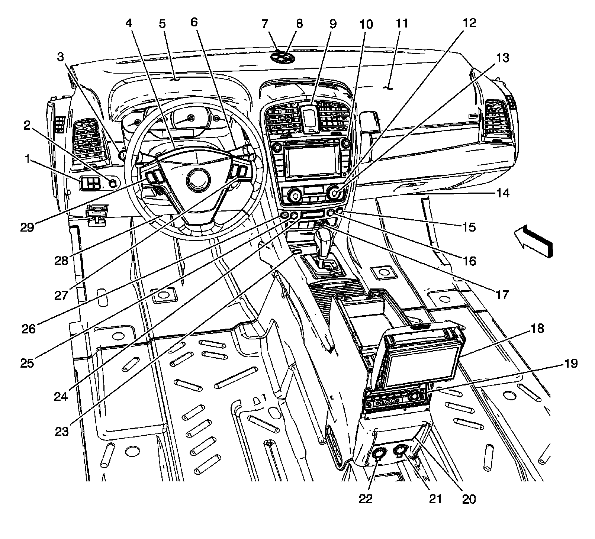
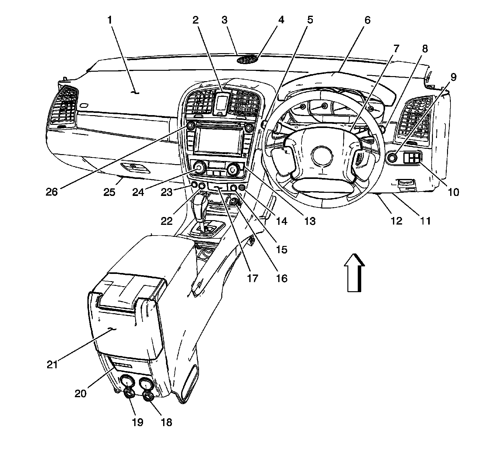

Hazard Warning Switch: Locations
Instrument Panel/Center Console Component Views
Instrument Panel and Floor Console Components (LHD)

1 - Driver Information Center (DIC) Switch
2 - Dimmer Switch
3 - Turn Signal/Multifunction Switch
4 - Inflatable Restraint Steering Wheel Module
5 - Instrument Panel Cluster (IPC)
6 - Windshield Wiper/Washer Switch
7 - Sunload/Ambient Light Sensor
8 - Speaker - Instrument Panel (UQS)
9 - Analog Clock
10 - Radio/CD/DVD/Navigation Unit (UV2)
11 - Inflatable Restraint I/P Module
12 - HVAC Control Module
13 - Rear Window Defogger Switch
14 - Courtesy Lamp - Right Footwell
15 - Hazard Switch
16 - Tow/Haul Switch
17 - Cigar Lighter
18 - Rear Video Display (U42)
19 - DVD Player (U42)
20 - Speaker - Center Console (UQS)
21 - Auxiliary Power Outlet - Center Console 2 (UQS)
22 - Auxiliary Power Outlet - Center Console 1
23 - Floor Console
24 - Inflatable Restraint I/P Module Indicator (AQS)
25 - Traction Control Switch
26 - Inside Air Temperature Sensor
27 - Steering Wheel Controls - Right
28 - Courtesy Lamp - Left Footwell
29 - Steering Wheel Controls - Left
Instrument Panel and Floor Console Components (RHD)

1 - Inflatable Restraint I/P Module
2 - Analog Clock
3 - Sunload/Ambient Light Sensor
4 - Speaker - Front Midrange (UQS)
5 - Turn Signal/Multifunction Switch
6 - Instrument Panel Cluster (IPC)
7 - Inflatable Restraint Steering Wheel Module
8 - Windshield Wiper/Washer Switch
9 - Dimmer Switch
10 - Driver Information Center (DIC) Switch
11 - Data Link Connector (DLC)
12 - Courtesy Lamp - Right Footwell
13 - HVAC Control Module
14 - Inside Air Temperature Sensor
15 - Traction Control Switch
16 - Cigar Lighter
17 - Inflatable Restraint I/P Module Indicator
18 - Auxiliary Power Outlet - Center Console 1
19 - Auxiliary Power Outlet - Center Console 2 (UQS)
20 - Speaker - Center Console (UQS)
21 - Rear Video Display (U42)
22 - Tow/Haul Switch
23 - Hazard Switch
24 - Rear Window Defogger Switch
25 - Courtesy Lamp - Right Footwell
26 - Radio/CD/DVD/Navigation Unit